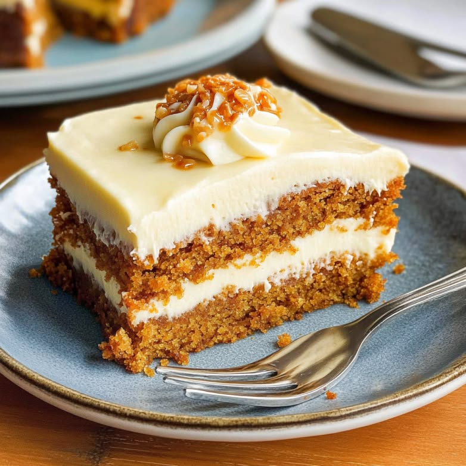

Difficulty - Medium
Total Time - 1 hr
INGREDIENTS :
Cake Batter
- 2 cups all-purpose flour
- 2 cups grated carrots
- 1 cup sugar
- 1/2 cup brown sugar
- 1 cup vegetable oil
- 4 eggs
- 2 tsp baking powder
- 1 tsp baking soda
- 1 tsp cinnamon powder
- 1/2 tsp nutmeg
- 1/2 tsp salt
- 1/2 cup walnuts, chopped
Cream Cheese Frosting
- 200g cream cheese
- 1/2 cup butter, softened
- 2 cups powdered sugar
- 1 tsp vanilla extract
INSTRUCTIONS :
- Preheat oven to 180°C (350°F). Grease and line a cake tin.
- In a bowl, whisk eggs, sugar, brown sugar, and oil until smooth.
- Mix in grated carrots and walnuts.
- Sift flour, baking powder, baking soda, cinnamon, nutmeg, and salt. Fold into wet mixture.
- Pour batter into tin and bake for 40–45 minutes until a toothpick comes out clean.
- For frosting, beat cream cheese and butter until fluffy. Add powdered sugar and vanilla.
- Cool cake completely, then frost and serve.